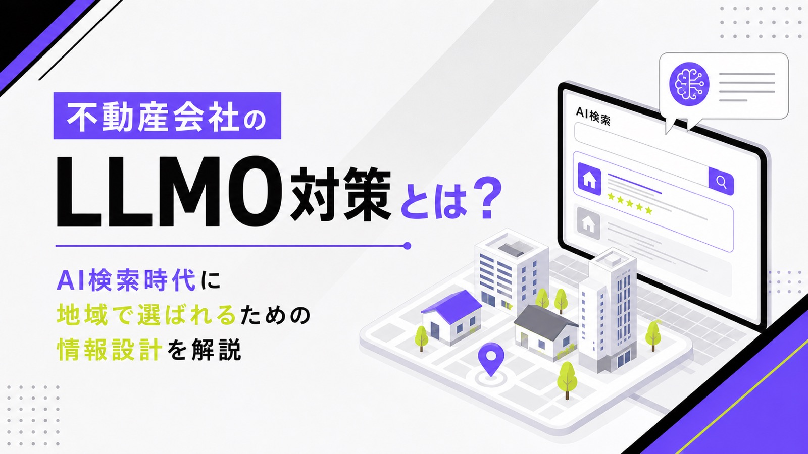
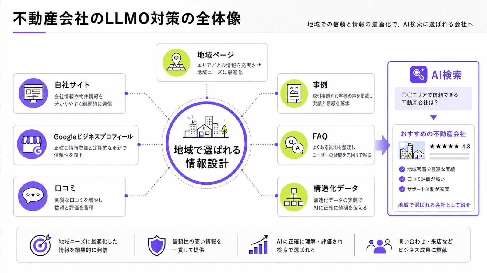
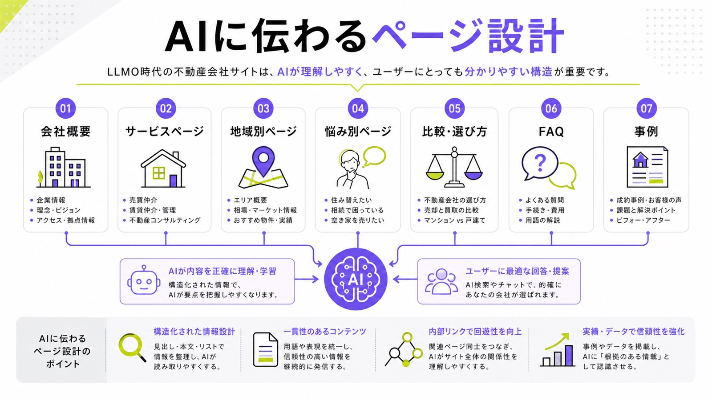
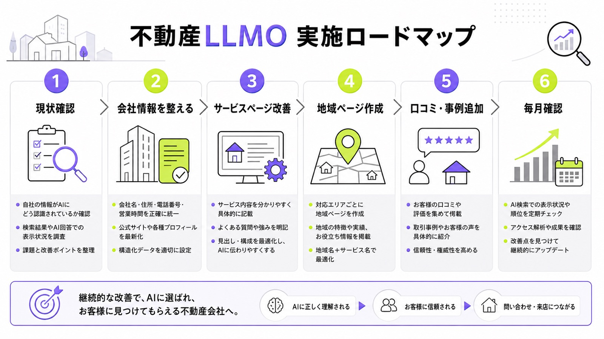

不動産会社のLLMO対策とは？AI検索時代に地域で選ばれるための情報設計を解説

不動産会社の集客は、ポータルサイトや検索エンジンだけで完結しなくなりつつあります。ユーザーは「大阪市で相続不動産に強い会社は？」「初めてのマンション購入で相談しやすい不動産会社は？」のように、AIに相談しながら候補を絞るようになっています。
そのため、不動産会社には従来のSEOやMEOに加えて、AIに会社情報・対応エリア・専門性・実績・口コミを正しく理解してもらうための情報設計が必要です。これが、不動産会社におけるLLMO対策の基本です。
この記事では、不動産会社がAI検索時代に地域で選ばれるために、どのような情報を整え、どのようなページを作り、どの指標を見ればよいのかを解説します。
目次

不動産会社にLLMO対策が必要な理由
LLMOとは、ChatGPT、Gemini、Perplexity、GoogleのAI OverviewsやAI Modeなど、AIが回答を生成する場面で自社情報が引用・参照・推薦されやすい状態を作る取り組みです。
不動産会社の場合、単に会社名をAIに覚えてもらうことが目的ではありません。「どの地域に強い会社なのか」「売買・賃貸・管理・相続・空き家など、何の相談に強いのか」「実際にどのような顧客から評価されているのか」をWeb上に蓄積し、AIにもユーザーにも伝わる状態を作ることが重要です。

物件探しの前に「相談先探し」がAI化している
従来のユーザーは、「地域名 不動産会社」「地域名 中古マンション」「地域名 賃貸管理」などで検索し、検索結果やポータルサイトを見ながら問い合わせ先を選んでいました。しかし、AI検索が普及すると、検索行動はより相談型に変わります。
たとえば、「親から相続した空き家を売るなら、どんな不動産会社に相談すべきか」「大阪市北区で中古マンション売却に強い会社はどこか」といった聞き方が増えます。このときAIは、地域性、専門性、実績、口コミ、外部サイト上の情報などをもとに候補を組み立てるため、会社の強みをWeb上に明確に残しておく必要があります。
不動産は地域性・専門性・信頼性が判断材料になりやすい
不動産は、全国どこでも同じ商品を売るビジネスではありません。駅ごとの相場、学区、周辺環境、売却ニーズ、賃貸需要、管理物件の傾向など、地域ごとの知見が重要になります。
AIに「この会社は地域に詳しい」と判断してもらうには、対応エリアをただ並べるだけでは不十分です。市区町村、駅、町名、学区、物件種別、相談内容を組み合わせて、自社がどの領域で価値を出せるのかを具体的に示す必要があります。
ポータルサイト依存だけでは会社名が残りにくい
不動産ポータルサイトは、物件反響を獲得するうえで有効です。ただし、ポータルサイト上では物件情報が主役になりやすく、会社独自の強みや相談力は伝わりにくくなります。
AI検索で会社名を候補に入れてもらうには、自社サイト、Googleビジネスプロフィール、口コミ、外部掲載、事例ページなど、複数の場所に一貫した会社情報を持たせることが重要です。ポータルに掲載するだけでなく、自社の専門性を蓄積する媒体を持つ必要があります。
LLMO対策とは？不動産SEOとの違い
不動産会社のLLMO対策は、SEOとまったく別の施策ではありません。むしろ、SEO、MEO、口コミ対策、構造化データ、外部評価をAI検索向けに再設計する考え方です。
AI検索への表示条件について、Google検索セントラルには次の記載があります。
AI による概要や AI モードにコンテンツが表示されるための追加の要件はなく、別途特別な最適化を行う必要もありません。
この記載からも、不動産LLMOではAI専用の裏技を探すより、検索エンジンが理解できるサイト構造、ユーザーに役立つ本文、正確な会社情報、適切な内部リンクを整えることが重要だといえます。
SEOは検索順位、LLMOはAI回答内の引用・推薦を狙う
SEOは、検索結果で上位表示されることを主な目的とします。一方でLLMOは、AIが回答を作るときに、自社の情報が参照される状態を目指します。検索順位だけでなく、AI回答内で会社名・サービス名・地域名がどう扱われるかが重要になります。
たとえば、「〇〇市で不動産売却に強い会社」とAIに聞いたとき、自社名が候補に入るかどうかは、検索順位だけでは決まりません。対応エリア、売却実績、口コミ、事例、専門ページ、外部での言及など、会社を理解する材料がどれだけ揃っているかが影響します。
LLMOはSEOの代替ではなく延長線上にある
LLMOを始めると聞くと、特別なAI対策をイメージしやすいですが、土台になるのは従来のSEOです。クロールを妨げないこと、重要ページへ内部リンクを通すこと、本文をテキストで読める状態にすること、ページ体験を整えることは、AI検索でも引き続き重要です。
AI OverviewsやAI Modeでは、複数の関連検索を広げながら回答を作る「query fan-out」の仕組みが使われる場合があります。単一KWだけを狙うよりも、地域、悩み、比較、FAQ、実績などを面で整えるほうが、不動産会社の情報は拾われやすくなります。
不動産LLMOではMEO・口コミ・地域情報も重要になる
不動産会社は地域密着型のビジネスです。そのため、Webサイトの記事だけでなく、Googleビジネスプロフィール、口コミ、所在地情報、営業時間、写真、外部サイト上の会社情報もLLMO対策の一部になります。
ローカル検索の表示要素について、Googleビジネスプロフィールには次の記載があります。
ローカル検索結果は、主に関連性、距離、人気度に基づいて表示されます。
地域の不動産会社がAI検索で選ばれるには、自社サイトのコンテンツだけでなく、Googleビジネスプロフィールや口コミまで含めて整える必要があります。
不動産会社がAIに選ばれにくいサイトの特徴
LLMO対策を始める前に、自社サイトがAIに理解されにくい状態になっていないかを確認する必要があります。不動産会社のサイトでは、物件情報は豊富でも、会社そのものの強みが伝わっていないケースが少なくありません。
AIは、ページ上に存在しない情報を勝手に正確に補完してくれるわけではありません。対応エリア、得意分野、実績、担当者、口コミ、相談の流れなど、会社を評価するための情報が薄いと、AIにもユーザーにも選ばれにくくなります。
対応エリアが曖昧になっている
「地域密着」「地元に強い」と書いていても、具体的な市区町村名、駅名、町名、学区、対応範囲が書かれていなければ、AIにもユーザーにも強みが伝わりません。不動産では、どのエリアに詳しいかがそのまま信頼材料になります。
たとえば「大阪市の不動産売却に対応」だけでなく、「大阪市北区・福島区・中央区の中古マンション売却」「天満・中崎町周辺の住み替え相談」のように、地域と相談内容を組み合わせて明記します。地域の粒度を細かくすることで、AIが会社の対応領域を理解しやすくなります。
サービスごとの強みが分かれていない
不動産会社のトップページには、売買仲介、賃貸仲介、賃貸管理、買取、相続、空き家相談など、複数のサービスがまとめて書かれています。しかし、すべてを1ページに詰め込むと、どの相談に強い会社なのかが見えにくくなります。
LLMO対策では、サービスごとに専用ページを用意することが重要です。不動産売却なら査定、販売活動、成約事例、売却期間、費用を説明し、賃貸管理なら管理戸数、対応業務、オーナー向けの課題、管理事例を説明します。ページを分けることで、AIにもユーザーにも専門性が伝わります。
実績・口コミ・事例が薄い
「豊富な実績」「丁寧な対応」「地域密着」だけでは、他社との違いが伝わりません。AIが会社を候補として扱うには、具体的な判断材料が必要です。売却件数、管理戸数、相談件数、査定事例、対応エリア内の成約事例などを掲載することが重要です。
数字を出しにくい場合は、匿名化した相談事例でも問題ありません。「相続した空き家を売却した事例」「転勤に伴うマンション売却の事例」「空室が続いた賃貸物件を改善した事例」のように、課題、提案、結果をセットで残すと、会社の専門性が伝わりやすくなります。
不動産LLMO対策で整えるべき情報
不動産会社のLLMO対策では、AIが会社を理解するための情報を体系的に整える必要があります。重要なのは、会社情報、サービス情報、地域情報、実績情報、口コミ情報をバラバラに出すのではなく、一貫した内容としてWeb上に蓄積することです。
AI検索では、ユーザーの質問が具体的になります。「〇〇市で相続不動産に強い会社」「駅近マンション売却が得意な会社」「賃貸管理を任せられる会社」のように聞かれたとき、回答の材料になる情報を事前に用意しておく必要があります。
会社情報：誰が運営している会社かを明確にする
不動産は高額な取引を扱うため、会社の信頼性が非常に重要です。会社名、所在地、代表者名、宅地建物取引業免許番号、加盟団体、営業時間、電話番号、対応エリア、得意領域を明記し、ユーザーが安心して相談できる状態を作ります。
会社概要ページは、単なる基本情報の置き場ではありません。代表者の考え、地域での実績、どのような顧客を支援しているのか、どの領域に強いのかを伝えるページです。AIにもユーザーにも、会社の実体が伝わるように作り込みます。
サービス情報：何の相談に対応できるかを分けて書く
不動産会社が扱う相談は多岐にわたります。売買仲介、賃貸仲介、賃貸管理、不動産売却、買取、相続不動産、空き家、任意売却、投資用物件など、サービスごとにユーザーの悩みも判断基準も異なります。
各サービスページでは、対象者、よくある悩み、対応できること、相談の流れ、費用、必要書類、事例、FAQを入れます。AIは質問に対して具体的な回答を作るため、サービスごとの情報が細かく整理されているほど、回答材料として扱いやすくなります。
地域情報：市区町村・駅・学区単位で情報を持つ
不動産会社のLLMO対策では、地域情報が大きな武器になります。市区町村だけでなく、駅、町名、学区、商業施設、交通、生活環境、価格帯、購入層、売却傾向、賃貸需要まで書くことで、地域に詳しい会社としての印象が強くなります。
ただし、地域名を並べるだけのページは避けるべきです。「〇〇市の不動産売却」ページであれば、売却相場、需要がある物件種別、売却時の注意点、実際の相談事例、対応可能なエリアを入れます。地域と相談内容が結びつくことで、AIにもユーザーにも意味のあるページになります。
実績情報：数字と事例で専門性を示す
実績情報は、不動産会社の専門性を伝えるうえで欠かせません。年間相談件数、売却成約件数、管理戸数、平均売却期間、対応エリア内の実績など、出せる数字は積極的に掲載します。数字と事例で専門性を示すことで、会社の強みが具体化されます。
数字だけでなく、事例も重要です。相談前の状況、顧客の悩み、提案内容、結果、担当者コメントをセットで掲載すると、単なる実績一覧よりも説得力が出ます。AIが「この会社は何に強いのか」を理解する材料にもなります。
不動産会社が作るべきLLMO向けコンテンツ
不動産LLMOでは、検索ボリュームの大きい一般KWだけを狙うのではなく、ユーザーがAIに質問しそうな具体的な悩みを拾うことが重要です。特に、地域名、物件種別、状況、相談内容を組み合わせたコンテンツは相性がよくなります。
たとえば「不動産売却」という広いテーマだけでなく、「相続した実家を売る」「住宅ローンが残った家を売る」「空き家を売る」「離婚で家を売る」といった相談型のページを作ることで、AI検索の回答材料を増やせます。

地域別ページ
地域別ページは、不動産会社のLLMO対策で優先度の高いコンテンツです。「大阪市北区の不動産売却」「吹田市の中古マンション購入」「西宮市の賃貸管理」「堺市の空き家売却」のように、地域とサービスを組み合わせて作ります。
地域別ページでは、対象エリア、相場、交通、住環境、売却・購入・賃貸の傾向、相談事例、対応可能な物件種別を入れます。地域名だけを差し替えた量産ページではなく、そのエリアで相談する理由が伝わるページにすることが重要です。
悩み別ページ
悩み別ページは、AI検索と相性がよいコンテンツです。ユーザーはAIに「相続した家を売るにはどうすればいい？」「空き家を放置するとどうなる？」「住宅ローンが残っていても売却できる？」のように質問します。
このような相談に対して、流れ、注意点、費用、必要書類、相談先、よくある失敗を解説するページを用意します。最後に自社の対応エリアや相談事例につなげることで、単なる読み物ではなく、問い合わせにつながるページになります。
比較・選び方ページ
AI検索では、比較型の質問も多くなります。「大手不動産会社と地域密着型の違い」「仲介と買取の違い」「不動産一括査定と地元不動産会社の違い」「賃貸管理会社の選び方」などは、不動産会社が作るべきテーマです。
比較ページでは、どちらが優れているかを一方的に決めるのではなく、向いている人、メリット、デメリット、判断基準を示します。そのうえで、自社がどの選択肢に強いのかを自然に伝えると、AIにもユーザーにも信頼されやすい情報になります。
FAQ・事例ページ
FAQページは、AIが回答を作るときに使いやすい情報源になります。「査定だけでも依頼できるか」「近所に知られずに売却できるか」「相続登記前でも相談できるか」「古い家でも売れるか」など、実際に顧客から聞かれる質問を1問1答でまとめます。
事例ページでは、相談前の状況、課題、提案内容、結果を具体的に書きます。FAQが疑問への入口になるのに対し、事例は信頼形成の材料になります。両方を用意することで、AIにもユーザーにも相談先としての説得力を示せます。
Googleビジネスプロフィールと口コミの整備
不動産会社のLLMO対策では、自社サイトだけを改善しても不十分です。地域名を含む検索や「近くの不動産会社」のような検索では、Googleビジネスプロフィールの情報が重要になります。
Googleビジネスプロフィールでは、正確で完全な情報、営業時間の更新、口コミへの返信、写真や動画の追加が推奨されています。ローカル検索で見つかりやすくなるだけでなく、AIやユーザーが会社を判断する材料にもなります。
基本情報を正確にそろえる
会社名、住所、電話番号、営業時間、カテゴリ、サービス、WebサイトURLは、Googleビジネスプロフィール、自社サイト、ポータルサイト、SNS、業界団体ページで表記をそろえます。情報がバラバラだと、ユーザーにも検索エンジンにも不安を与えます。
特に不動産会社では、店舗型か来店予約制か、対応エリアはどこか、売買・賃貸・管理のどれに対応しているかを明確にする必要があります。会社情報を正確に保つことは、MEOだけでなく、LLMOの土台にもなります。
口コミを集め、丁寧に返信する
口コミは、地域の不動産会社を比較するうえで重要な判断材料です。売却完了後、賃貸契約後、管理開始後、引き渡し後など、顧客満足度が高いタイミングで口コミを依頼する導線を作ります。
返信では、個人情報に配慮しながら、相談内容、対応姿勢、地域性が伝わるように書きます。「ありがとうございました」だけで終わらせるのではなく、どのような相談に対応したのかが自然に伝わる返信にすると、ユーザーにもAIにも会社の特徴が伝わりやすくなります。
写真・動画・投稿で実在感を補強する
不動産会社は、ユーザーから見て相談前の心理的ハードルが高い業種です。外観、店内、スタッフ、接客スペース、周辺エリア、管理物件の雰囲気などを写真や動画で見せることで、実在感と安心感が生まれます。
写真や動画は、会社の雰囲気を伝えるだけでなく、ローカル情報の補強にもなります。駅からのアクセス、店舗入口、相談スペース、スタッフの表情などを定期的に追加することで、Web上の会社情報がより具体的になります。
不動産LLMOで最低限やるべき構造化データ
構造化データは、検索エンジンにページ内容を明確に伝えるための補助になります。不動産会社のLLMO対策でも、会社情報、店舗情報、物件情報、FAQ、パンくずリストなどを適切にマークアップすることは有効です。
ただし、構造化データだけでAIに選ばれるわけではありません。ページ上にユーザーが読める情報をきちんと掲載し、その内容に対応する形で構造化データを実装することが大切です。構造化データは裏技ではなく、情報整理の補助として使います。
LocalBusiness / RealEstateAgentで会社情報を伝える
不動産会社の基本情報には、LocalBusinessやRealEstateAgentの考え方を取り入れます。会社名、住所、電話番号、営業時間、URL、対応エリア、サービス内容などをページ上に明記し、構造化データでも補足します。
LocalBusiness構造化データでは、営業時間、部署、レビューなどの情報を伝えられます。不動産会社の場合は、schema.orgのRealEstateAgentも選択肢になります。自社の業態に合わせて、最も具体的な型を選ぶことが重要です。
物件ページではRealEstateListingの考え方を取り入れる
物件ページでは、所在地、価格、間取り、面積、築年数、交通、取引態様、公開日、更新日、募集状況などを明確にします。AI検索時代でも、ユーザーに見える物件情報の正確性が最優先です。
schema.orgにはRealEstateListingという型があり、不動産の売買・賃貸に関する掲載情報を表すために使えます。物件ページを持つ不動産会社は、物件情報をページ上で整理し、その内容と矛盾しない形で構造化データを検討します。
構造化データだけに依存しない
構造化データは、ページ内容を検索エンジンに伝える補助にはなりますが、本文が薄いページの評価を根本的に変えるものではありません。見えない情報だけをマークアップするのではなく、ユーザーが読める本文と一致させる必要があります。
不動産LLMOで優先すべきなのは、構造化データの実装よりも先に、会社情報、サービス情報、地域情報、実績、FAQをページ上に整えることです。そのうえで、必要な箇所に構造化データを追加すると、情報の理解を助けやすくなります。
不動産LLMOで注意すべき広告表現・法令リスク
不動産会社がLLMO対策を進めると、地域ページ、物件ページ、FAQ、事例記事など、Web上の情報量が増えます。情報量を増やすこと自体は有効ですが、不動産広告では正確性が強く求められます。
特に、物件の有無、価格、徒歩分数、面積、築年数、成約状況、売却実績、No.1表現などは注意が必要です。AI検索に拾われやすくするために情報を増やしても、内容が不正確であれば信頼を失います。
おとり広告にならないように物件情報を管理する
不動産広告では、実際には取引できない物件、契約済みで取引対象にならない物件、取引する意思がない物件に関する表示は、おとり広告に該当する可能性があります。
不動産広告におけるおとり広告について、首都圏不動産公正取引協議会は次のような表示を挙げています。
実際には取引することができない物件に関する表示
実際には取引の対象となり得ない物件に関する表示
LLMO対策のために過去の物件ページを残す場合でも、現在募集中の物件なのか、成約済み事例なのかを明確に分けます。集客目的の物件ページと実績紹介ページを混同すると、ユーザーに誤解を与える可能性があります。
誇大表現・No.1表現に注意する
「必ず高く売れる」「絶対に損しない」「地域No.1」「最短で売却できる」などの表現は、根拠がないまま使うべきではありません。不動産は高額な意思決定に関わるため、誤解を招く表現は信頼低下につながります。
強みを伝える場合は、曖昧な誇張ではなく、根拠のある表現に置き換えます。たとえば「地域No.1」ではなく、「〇〇市を中心に中古マンション売却を支援」「相続不動産の相談事例を掲載」「管理戸数〇戸」のように、確認できる事実で示します。
AI生成記事も人間が最終確認する
AIを使えば、地域ページやFAQを効率よく作れます。ただし、不動産分野では、相場、法令、税金、住宅ローン、相続、登記、物件条件など、誤った情報が大きなトラブルにつながるテーマが多くあります。だからこそ人間が最終確認する前提が必要です。
AIで下書きを作る場合でも、最終確認は必ず担当者が行います。専門性が高い内容は、宅建士、司法書士、税理士、弁護士などの確認を入れる体制も検討します。LLMO対策では、量よりも正確性と信頼性を優先することが大切です。
不動産会社が今すぐ始めるべきLLMO対策の手順
不動産LLMO対策は、一度に大規模なサイト改修をする必要はありません。まずはAI検索で自社がどう見えているかを確認し、会社情報、サービスページ、地域ページ、口コミ、事例の順に整えていくのが現実的です。
重要なのは、施策を単発で終わらせないことです。地域ページを作る、口コミを集める、事例を追加する、AI検索で表示状況を確認するという流れを毎月の運用に組み込みます。

ステップ1：自社名と地域名でAI検索して現状を確認する
まずは、ChatGPT、Gemini、Perplexity、Google検索で自社名、地域名、サービス名を検索します。「〇〇市で不動産売却に強い会社」「〇〇不動産はどんな会社」「〇〇市で相続不動産の相談ができる会社」のように、実際のユーザーに近い質問を入力します。
確認するポイントは、自社が表示されるか、強みが正しく伝わるか、古い情報が出ていないか、競合がどのように扱われているかです。表示されない場合は、AIが参照できる材料が不足している可能性があります。
ステップ2：会社概要・サービスページを改善する
次に、会社概要ページと主力サービスページを改善します。会社概要には、所在地、免許番号、代表者、対応エリア、得意領域、実績、加盟団体を入れます。サービスページには、対象者、悩み、相談の流れ、費用、事例、FAQを入れます。
最初から全サービスを作り込む必要はありません。売却に強い会社なら不動産売却ページ、管理に強い会社なら賃貸管理ページ、相続に強い会社なら相続不動産ページを優先します。売上につながる領域から着手するのが現実的です。
ステップ3：地域ページと悩み別ページを増やす
会社情報とサービスページを整えたら、地域ページと悩み別ページを増やします。地域ページは「主要対応エリア×主力サービス」で作ります。悩み別ページは、顧客からよく聞かれる相談をもとに作ります。
たとえば、「大阪市北区の不動産売却」「吹田市の相続不動産相談」「豊中市の賃貸管理」「空き家を売る流れ」「住宅ローンが残る家の売却」などです。地域と悩みを組み合わせることで、AI検索にも通常検索にも拾われやすい導線を作れます。
ステップ4：口コミ・事例・外部掲載を増やす
自社サイトだけでなく、外部にある会社情報も整えます。Googleビジネスプロフィール、ポータルサイトの会社ページ、業界団体ページ、SNS、地域メディア、プレスリリースなど、会社名とサービス内容が掲載される場所を増やします。
口コミと事例は、特に優先度が高い情報です。口コミは第三者評価として信頼形成に役立ち、事例は会社の専門性を具体的に示します。AI検索で会社を候補に入れてもらうには、自社発信と外部評価の両方を積み上げる必要があります。
不動産LLMO対策で見るべき指標
LLMO対策は、検索順位だけでは成果を判断しにくい施策です。通常のSEO指標に加えて、指名検索、地域KW、Googleビジネスプロフィールの反応、口コミ、AI検索での表示状況を見ていく必要があります。
特に不動産会社では、問い合わせ数だけでなく、問い合わせの質も重要です。対応エリア外の問い合わせが減り、自社が得意な相談が増えているかどうかを確認します。
指名検索数
指名検索数は、会社名や代表者名、サービス名で検索された回数です。AI検索、SNS、口コミ、紹介、地域ページなどで認知されたユーザーは、最終的に会社名で検索することがあります。
LLMO対策の成果は、すぐに問い合わせ数だけに表れるとは限りません。まずは「会社名で検索される回数が増えているか」「Googleビジネスプロフィールの表示回数が増えているか」「会社名＋評判の検索が増えているか」を確認します。
地域KWの流入
地域KWの流入は、不動産会社にとって重要な指標です。「地域名 不動産売却」「地域名 賃貸管理」「地域名 相続不動産」「地域名 空き家売却」など、対応エリアとサービスを組み合わせたキーワードを見ます。
地域ページを増やしたあとは、Search Consoleで表示回数、クリック数、掲載順位を確認します。検索ボリュームが小さいKWでも、問い合わせにつながる可能性が高い場合があります。大きなKWだけでなく、成約に近いKWを評価することが重要です。
AI検索での表示・引用状況
AI検索での表示状況は、定点観測が必要です。「〇〇市で不動産売却に強い会社」「〇〇市の賃貸管理会社」「相続不動産に強い不動産会社」など、重要な質問を決めて毎月確認します。
確認するのは、自社名が出るかどうかだけではありません。自社の強みが正しく表示されているか、古い情報が出ていないか、競合と比較してどの情報が不足しているかを見ます。その結果をもとに、ページ改善、口コミ強化、事例追加を行います。
まとめ：不動産LLMO対策は「地域で信頼される理由」をWeb上に増やすこと
不動産会社のLLMO対策は、AI向けの特殊な裏技ではありません。地域、専門分野、会社情報、実績、口コミ、FAQ、事例をWeb上にわかりやすく蓄積し、AIにもユーザーにも「なぜこの会社に相談すべきか」が伝わる状態を作ることです。
まず取り組むべきなのは、会社概要ページ、Googleビジネスプロフィール、主力サービスページ、地域ページ、FAQ、事例ページです。これらを整えることで、通常検索、ローカル検索、AI検索のすべてに対応しやすくなります。
AI検索時代の不動産集客では、単に物件を掲載するだけでは不十分です。地域でどのような相談に強く、どのような実績があり、どのような顧客から選ばれているのかを継続的に発信することが、今後の集客基盤になります。
参考リンク
参考：Google 検索セントラル｜構造化データ マークアップとは